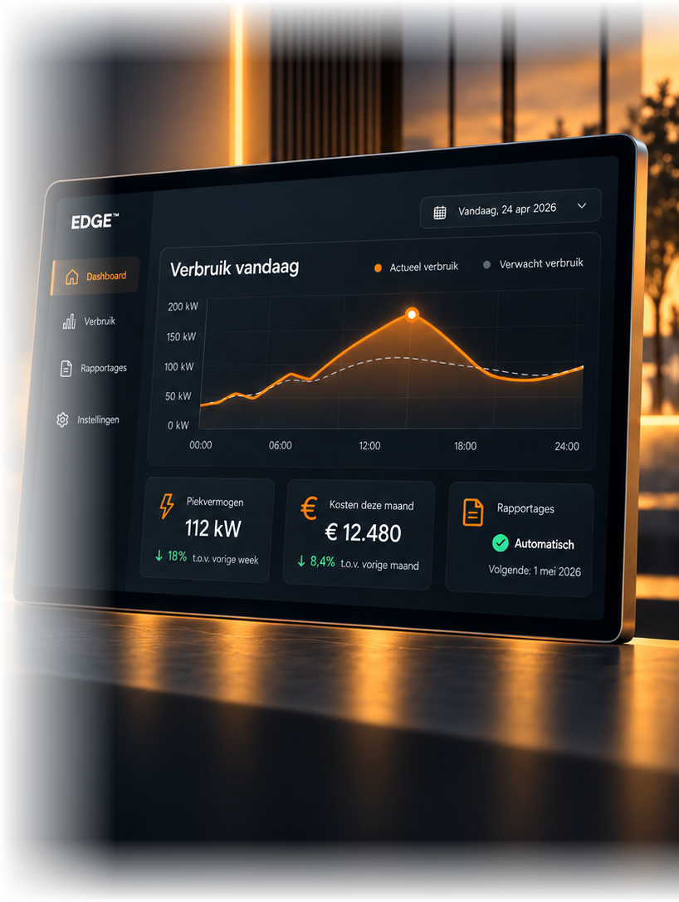
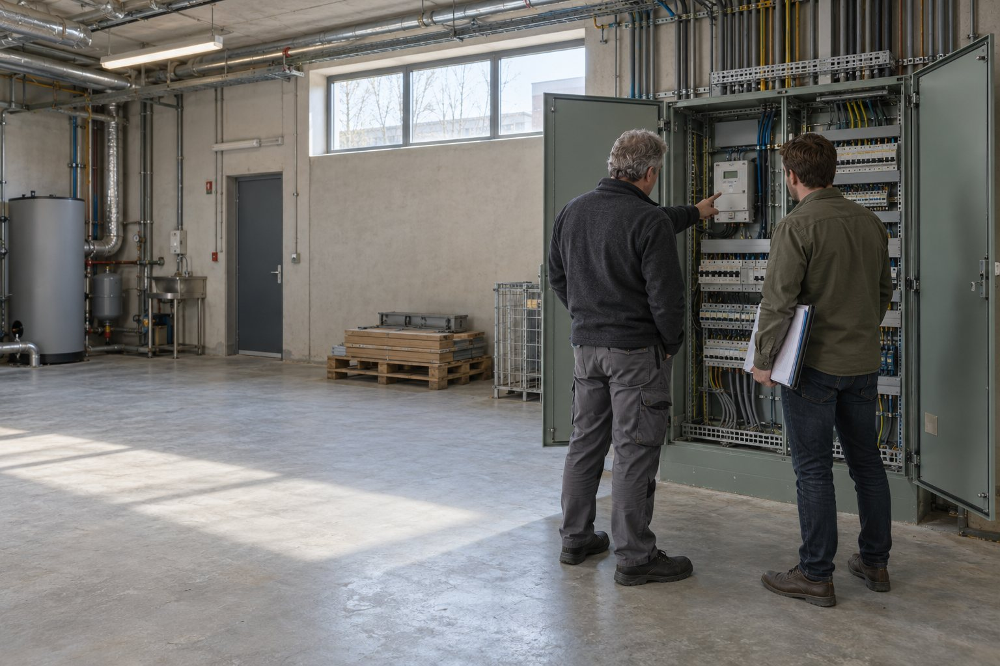

Energie inkopen
Tot 30% goedkoper, alleen of collectief
BekijkZakelijke energiepartner sinds 2012
Lagere energiekosten en moeiteloos voldoen aan de energieregels. Want wat u niet verbruikt, hoeft u ook niet in te kopen.

Kosteloos · Reactie binnen 1 werkdag
Vertrouwd door ondernemers in heel Nederland
Snel en persoonlijk advies
Twee vragen, twee minuten, en u weet waar u aan toe bent.
Wat is uw sector?
Kies de sector die het beste past.Hoeveel stroom verbruikt u per jaar?
Een schatting is voldoende.{{ progText }}
Anoniem. Wij slaan niets op tot u zelf uw gegevens achterlaat.
Een indicatie. In de intake bepalen wij wat precies voor u geldt.
Liever eerst zelf lezen?
Ontvang het volledige overzicht in uw mailbox.
De compliancekalender 2027: alle drempels, data en rapportagemomenten op één A4.
{{ errCheckMail }}
Geen spam. U kunt zich altijd afmelden.
Kies uw sector. U ziet welke plichten er meestal gelden, waar uw verbruik zit en welke maatregelen zich het snelst terugverdienen.
Samen naar een energiezuinige toekomst.
Meer over onze aanpakIndicatief, op basis van onze praktijk en de Erkende Maatregelenlijsten.
Sectorgids
{{ secGidsTitel }}
{{ secGidsSub }}
{{ secGidsMeta }}
Gratis en vrijblijvend
Staat uw sector er niet bij? Bekijk alle sectoren of bespreek uw situatie.
EDGE™
Van verbruik naar actie, in één platform.

Voorbeeldweergave van het EDGE-dashboard.
 HorecaRotterdam
HorecaRotterdam
Rust, overzicht en ruimte om te groeien.Eva Eekman
Klanten
{{ klantAantalTekst }}
ondernemers gingen u voor.
In vier stappen van een vrijblijvend gesprek naar resultaat.

Uw plichten en einddata op één A4
Voorstel met besparing en terugverdientijd
Geregeld zonder werk voor u
Maandrapportage en een vast aanspreekpunt
Wat het oplevert: uw energiekosten stap voor stap
Illustratief · uw werkelijke besparing hangt af van uw situatie
Kosteloos · Geen verplichtingen · Reactie binnen 1 werkdag
Dit zijn de documenten waar onze adviseurs zelf mee werken. U vult uw e-mailadres in, wij sturen ze direct.
Eén e-mailadres. Geen verkooptelefoontje. Alle downloads in de kennisbank
Zelf verbruiken wordt belangrijker dan terugleveren.
Sturen met EDGE™Meer maatregelen worden verplicht via de nieuwe maatregelenlijst.
Naar de besparingsplichtVanaf 85 TJ per jaar, volgens de herziene EED.
Naar EED-auditWij brengen uw besparingspotentieel en uw verplichtingen in beeld.

Uw vaste aanspreekpunt
“Ik kijk eerst met u mee naar uw verbruik en verplichtingen. Daarna pas praten we over inkoop.”
Energieadviseur, Amstelveen
De plicht geldt vanaf 50.000 kWh elektriciteit en/of 25.000 m³ gas per jaar op één locatie. U moet dan de maatregelen treffen die zich binnen de wettelijke terugverdientijd terugverdienen en dit periodiek melden bij RVO. Wij bepalen kosteloos of dit voor u geldt en nemen de rapportage over.
De herziene EED kijkt naar uw energieverbruik in plaats van naar uw bedrijfsomvang. Vanaf meer dan 10 TJ per jaar geldt een auditplicht; vanaf 85 TJ moet u uiterlijk 11 oktober 2027 een energiebeheersysteem hebben ingevoerd. Onze auditeurs verzorgen analyse, rapportage en indiening.
Door de inkoopkracht van ons collectief van meer dan 1.000 bedrijven bespaart u tot 30% op uw energiekosten. Wij vergelijken, onderhandelen namens u en regelen de overstap.
EDGE™ is ons AI-gestuurde energiemanagementplatform. Het koppelt uw meters aan een cloudplatform en geeft realtime inzicht, automatische rapportage voor EBS en actieve sturing op piekbelasting. In de intake bepalen we welke koppeling bij uw meetopstelling past.
Vanaf 1 januari 2027 kunt u teruggeleverde stroom niet meer wegstrepen tegen uw verbruik; u krijgt een terugleververgoeding die tot 2030 minimaal de helft van het kale leveringstarief bedraagt. Zelf verbruiken wordt daardoor veel aantrekkelijker.
Niets. Het gesprek is kosteloos en vrijblijvend. U krijgt een helder beeld van uw besparingspotentieel en uw verplichtingen, ook als u besluit niet met ons verder te gaan.
Staat uw vraag er niet bij? Neem contact op
{{ gateType }}
{{ gateSub }}
Door te versturen gaat u akkoord met onze privacyverklaring.
{{ gateDoneSub }}
{{ belVraag }}
Laat uw nummer achter en een adviseur rekent het door voor uw eigen situatie. Eén gesprek van vijftien minuten, geen verkooppraat.
Genoteerd. Een adviseur belt u binnen 1 werkdag, tussen 9.00 en 17.30 uur.